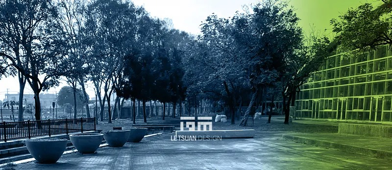
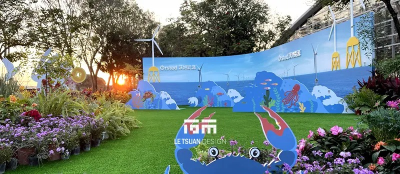
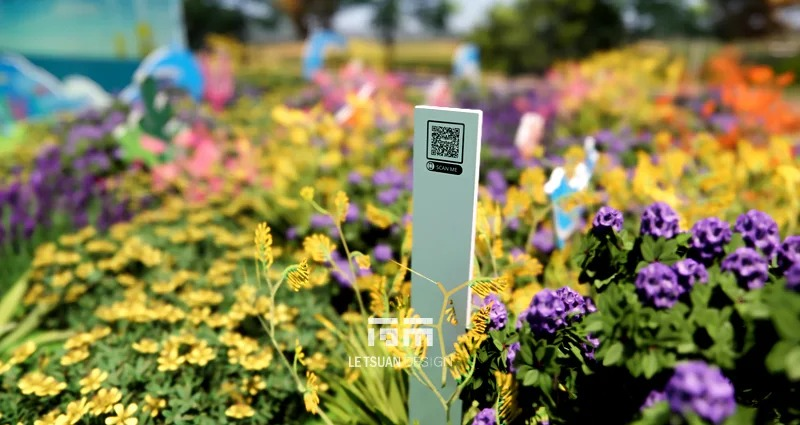
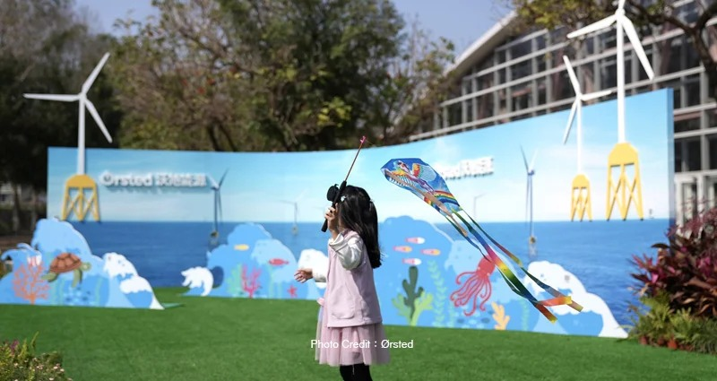
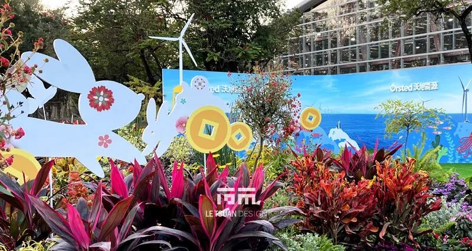
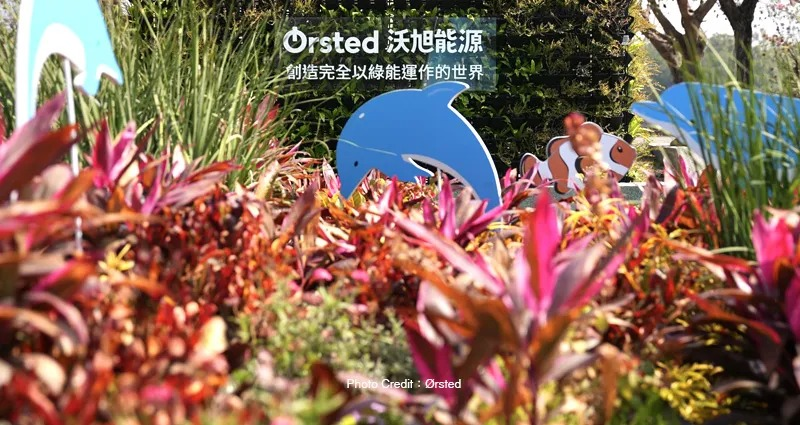

活動 — 2023溪州公園
灰階中的亮點 從畸零基地到打卡地標–2023彰化花卉博覽會 Ørsted 展區
沒人要的畸零角落，變成全園最多人排隊拍照的地方
Ørsted沃旭能源｜2023彰化花卉博覽會企業展區
沃旭能源參與「2023彰化花卉博覽會」的企業展區，以「風動綠色・永續彰化」為策展主軸。分配到的基地，是園區裡一處條件受限的畸零角落–既存水泥階與水泥墩結構卡在那裡，動線跟陳列規劃都被這些硬體限制卡死。
把嫌棄的水泥墩，變成牆的地基
我們沒有選擇繞開這些既存結構，而是把水泥墩重新定義為主形象牆的固定基礎–這個決定同時解決了兩件事：戶外展示長期承受風雨侵蝕、氣候變化造成的結構安全疑慮，有了現成的混凝土基礎當靠山；而這些原本嫌棄的硬體限制，也順勢整合進整體景觀敘事裡，變成結構效能跟空間美學的雙重解答。
植栽計畫也有自己的難題：展期正好碰上冬季花期淡季，能選的花材品項有限。我們比對研究後，選定色彩喜氣的灌木類植栽取代傳統應景花卉，再考量冬季常見的陰霾天候–環境明度整體偏低–刻意採取高彩度、高明度的視覺配色策略，讓展區在一片灰階基調中形成強烈對比，意外成了全園最亮眼的一塊。植栽牆面搭配沃旭大彰化離岸風場的意象背板，把企業的永續價值，轉譯成觀眾看得懂、感受得到的空間語彙。
最終，這個條件受限的畸零基地，成了春節期間全園最具人氣的拍照打卡地標–結構限制沒有被繞過，而是被直接蓋進了牆裡。






